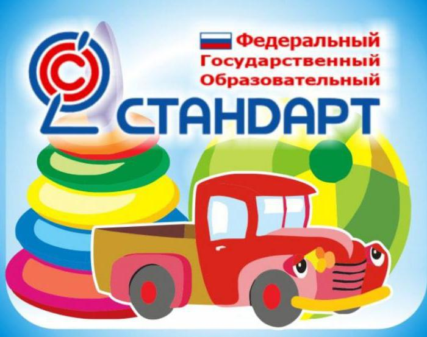
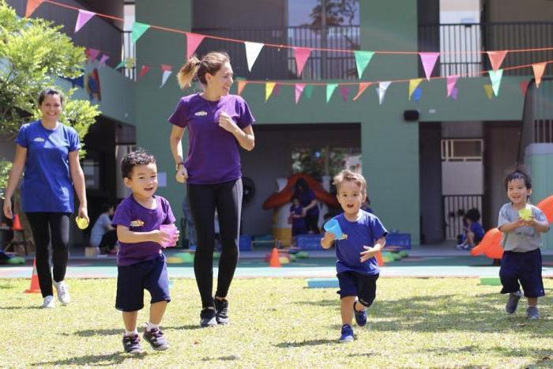
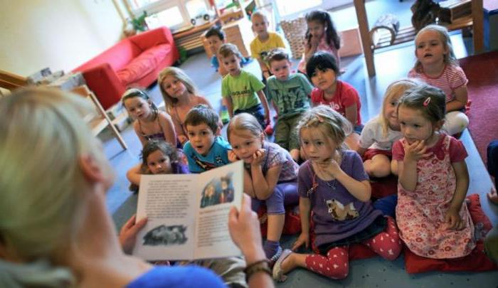
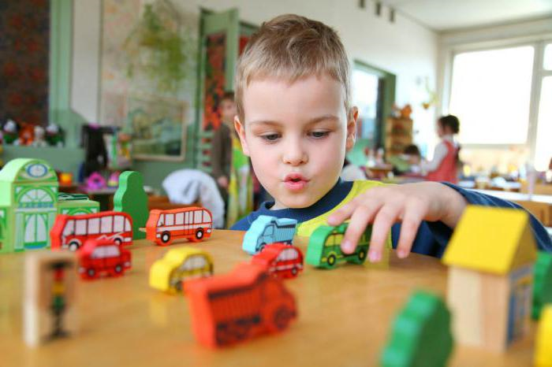
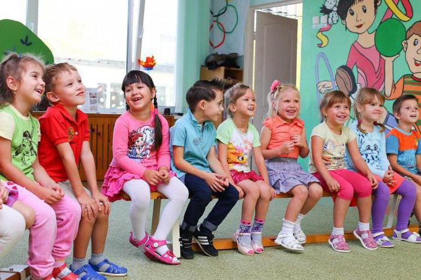
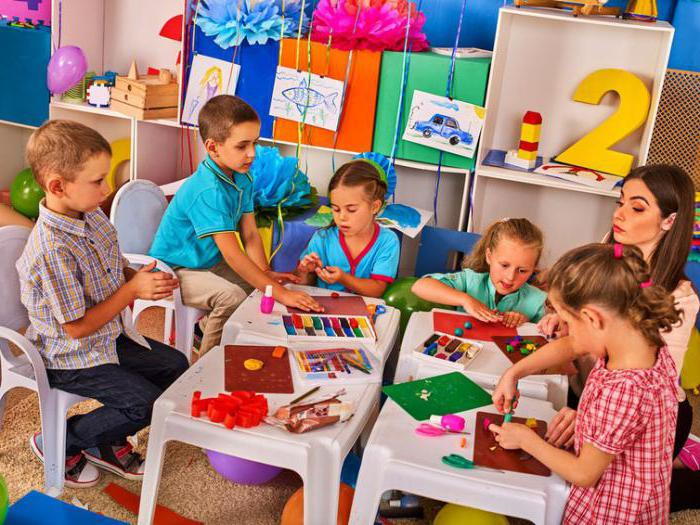

Дошкольное образование в России: система, федеральный стандарт, учреждения
Современное дошкольное образование – это первая государственная форма, в рамках которой осуществляется профессиональная воспитательно-образовательная работа с детьми.
Значимость
Социокультурная значимость дошкольного образования определяется особенностями возраста. Так, возраст от трех до семи лет – это самый чувствительный период, который характеризуется особенно быстрыми изменениями в интеллектуальном, социальном, физическом, эмоциональном и языковом развитии ребенка. Положительный жизненный опыт и основа для успешного развития, заложенные в дошкольном возрасте, создают базу будущего разностороннего развития ребенка. В этом и состоит значимость дошкольного образования.
Правовое регулирование ДО в РФ
В России дошкольное образование регулируется федеральным законом «Об образовании», который вступил в силу в 2013 году. Этот документ определяет формы и методы, содержание и принципы ДО (дошкольного образования), а также ожидаемые социокультурные и общественно-государственные результаты реализации программы. Федеральный стандарт дошкольного образования (ФГОС ДО) является ориентиром для специалистов ДОУ, работников системы ДО, семей, широкой общественности.

Основные задачи дошкольного образования
Основными задачами ФГОС ДО определяет:
1.Охрану жизни и укрепление психологического и физического здоровья детей от 2 месяцев до 7 лет, необходимую коррекцию недостатков в физическом или психологическом развитии.
2.Сохранение и поддержку индивидуальности воспитанника, развитие индивидуальных особенностей личности, творческого потенциала каждого ребенка.
3.Формирование общей культуры, развитие нравственных, эстетических, физических, интеллектуальных качеств воспитанников, ответственности, самостоятельности и инициативности.
4.Формирование предпосылок к дальнейшей успешной учебной деятельности в общих образовательных учреждениях системы образования.
5.Обеспечение разнообразия и вариативности содержания программ дошкольного образования, методов и форм воспитания с учетом возрастных особенностей воспитанников, потребностей и способностей детей.
6.Обеспечение возможностей для развития каждого дошкольника в период детства вне зависимости от пола, нации, языка, места проживания, социального статуса или других особенностей (в том числе ограниченных физических возможностей).
7.Обеспечение межведомственного взаимодействия, а также взаимодействия общественных и педагогических объединений.
8.Взаимодействие с семьями воспитанников для обеспечения развития дошкольника, оказание необходимой помощи родителям дошкольника по вопросам воспитания и обучения.
Система дошкольного воспитания в РФ
Система дошкольного образования в России – это воспитание, развитие и обучение, присмотр и оздоровление детей от 2 месяцев до 7 лет. Осуществляется дошкольное образование в ДОУ (детских образовательных учреждениях), но это не единственные компоненты системы. Еще есть городские и областные Управления дошкольного образования.

Сегодня в РФ насчитывается более 45 тыс. ДОУ. Современная организация дошкольного образования осуществляется через ясли, детские сады, центры дошкольного образования и другие учреждения. Более подробно об учреждениях ДО, принципах и программах дошкольного воспитания будет рассказано далее.
Характерные черты
Современное частное и государственное дошкольное образование в Российской Федерации имеет основные характерные черты. Во-первых, система обеспечивает целостный характер учебно-воспитательного процесса, его воспитывающий и развивающий характер. Это означает, что в ДОУ обеспечивается целостное медицинское, психологическое и педагогическое сопровождение ребенка.
Кроме того, именно в дошкольном возрасте начинает формироваться общая культура, условия для сохранения и укрепления здоровья детей, интеллектуальные, нравственные, моральные, физические, творческие, эстетические и личностные качества. Целостность системы также обеспечивается преемственностью дошкольного и начального школьного уровней образования.
Во-вторых, в учреждениях ДОУ обеспечивается комфортная эмоциональная обстановка и образовательная среда, разносторонне развивающая ребенка. Дети могут выбирать, как проявлять самостоятельность в соответствии с собственными склонностями и интересами. Это обеспечивается вариативностью и разнообразием образовательных программ дошкольного образования.

Предполагаемые результаты реализации госполитики
Ожидается, что введение ФГОС позволит значительно улучшить образовательное пространство в РФ. Общая государственная политика призвана обеспечить:
1.Качество образовательно-воспитательного процесса. В результате реализации ФГОС ожидается создание системы, гарантирующей положительные условия для качественного образования на всех уровнях (дошкольное, начальное, среднее и старшее школьное, дополнительное, специальное, высшее и так далее). Также планируется индивидуализировать образовательно-воспитательный процесс за счет вариативности и разнообразия программ, средств и методов обучения, сделать российское образование конкурентоспособным не только по содержанию, но и по качеству образовательных услуг.
2.Доступность образования. Общедоступное и бесплатное дошкольное, а также основное образование обеспечивается всем гражданам РФ, вне зависимости от национальности, пола, расы, возраста, состояния здоровья, социальной принадлежности, религии, убеждений, языка и других факторов. Высшее и среднее специальное образование граждане РФ могут получать бесплатно на конкурсной основе.
3.Достойная оплата труда педагогов. Необходимо достичь уровня оплаты, который бы обеспечивал конкурентоспособность сферы образования на рынке труда
4.Пенсионное обеспечение. Работникам сферы образования в перспективе должны быть гарантированы не только достойные зарплаты, но и достаточный уровень пенсионного обеспечения. Уже на сегодняшний день работникам, стаж которых насчитывает более 25 лет, вместо пенсии за выслугу лет предоставлено право на надбавку за стаж при продолжении педагогической деятельности.
5.Социальное обеспечение воспитанников, учащихся, студентов и аспирантов. В рамках этого пункта детям и молодежи, которые учатся в образовательных организациях, гарантируется защита жизни, обеспечение сохранности здоровья, физическое воспитание. Студентам обеспечивается адресная материальная помощь (стипендии, пособия), содействие трудоустройству.
6.Финансирование образовательной системы. Бюджет на образование должен увеличиваться опережающими темпами по отношению к другим государственным сферам, а средства – расходоваться более эффективно. Между отдельными ДОУ материальное обеспечение должны эффективно распределять местные Управления дошкольного образования.

Учреждения дошкольного образования
Учебно-воспитательный процесс в рамках системы ДО реализует сеть ДОУ. Наиболее распространенным учреждением данного типа является детский сад. Кроме того, в России существуют и другие виды ДОУ:
1.Общеразвивающие ДОУ. Как правило, в общеразвивающих детских садах приоритетным выделяется одно или несколько направлений воспитания (например, интеллектуальное, физическое или художественное).
2.Детские сады компенсирующего типа. Такие учреждения предназначены для детей с какими-либо отклонениями в развитии.
3.ДОУ присмотра и оздоровления. В таких ДОУ приоритетно осуществляются оздоровительные, санитарно-гигиенические и профилактические мероприятия.
4.Комбинированные учреждения. В состав комбинированного детского сада могут входить группы для детей с различными отклонениями, оздоровительные и общеобразовательные группы.
5.Центры дошкольного развития. Это ДОУ, где равное внимание уделяется оздоровлению, психическому и физическому развитию, коррекции возможных отклонений всех воспитанников.
В рамках дошкольного образования в России воспитывается 63 % (5,8 млн) детей соответствующего возраста. При этом еще около миллиона детей числятся в очереди на получение места в ДОУ.
Помимо привычных типов ДОУ, в настоящее время развитие получили группы кратковременного пребывания детей (интересно, что такие группы родители выбирают не вместо обычных детских садов, а параллельно с ними), дошкольные группы на базе школ или учреждений ДО, а также обучение детей в рамках семейного воспитания.
Принципы воспитательно-образовательного процесса
Основными принципами дошкольного образования в России являются:
- всестороннее развитие ребенка, отвечающее возрасту, состоянию здоровья, индивидуальные особенностям;
- решение образовательно-воспитательных задач в процессе совместной деятельности взрослых с детьми, а также самостоятельной деятельности воспитанников;
- взаимодействие с семьями (родители должны быть не сторонними наблюдателями, а принимать активное участие в реализации программы);
- максимальное приближение к разумному минимуму в образовательно-воспитательном процессе (это значит, что поставленные задачи нужно реализовывать только на необходимом и достаточном материале);
- обеспечение целостности образовательного процесса и так далее.

Направления развития ребенка в ДОУ
В тексте ФГОС употребляется понятие «занятие», хотя дети дошкольного возраста воспринимают мир через игру, а не занятие в стандартном понимании. Так что в этом случае слово «занятие» употребляется в смысле «занимательное дело». Обучение должно проводиться через игру.
В рамках ДОУ приобретение ценного опыта необходимо обеспечить в таких направлениях:
1.Физическая активность (спортивные игры, ходьба, лазание, прыжки, катание на самокате, велосипеде, бег и другие виды двигательной активности).
2.Коммуникативная деятельность (общение, взаимодействие с другими детьми, со взрослыми, владение устной речью).
3.Познание и исследование (исследование объектов окружающего мира, эксперименты).
4.Элементарная трудовая деятельность (навыки самообслуживания, бытового труда, труда в природе).
5.Художественное восприятие (восприятие художественной литературы и устного народного творчества).
6.Изобразительная деятельность (рисование, аппликация, лепка).
7.Конструирование из различных материалов (строительство из конструктора, природного материала, бумаги, конструирование различных моделей).
8.Музыкальная деятельность (игра на детских музыкальных инструментах, музыкально-ритмические движения, пение, хореография).
Порядок работы дошкольных учреждений
Детские сады, как правило, работают с 7-8 до 18-19 часов пять дней в неделю, что приближено к государственному рабочему дню. Есть также круглосуточные ДОУ, десятичасовой и четырнадцатичасовой режимы работы детских садов.
Количество детей в группах определяется заведующим ДОУ (исходя из предельной наполняемости). В группах для детей от двух месяцев до года должно быть максимум 10 воспитанников, от года до трех – 15, от трех до семи – 20 детей.
Прием в дошкольные учреждения и льготы
С 2009 года детские сады не могут принимать детей самостоятельно, для этого формируются специальные комиссии по комплектованию ДОУ. Это правило не касается частных детских садов. Для приема в ДОУ родителям необходимо предоставить комиссии пакет документов, который включает в себя свидетельство о рождении ребенка, паспорт одного из законных представителей, медкарту ребенка, документ, который подтверждает льготу (при ее наличии). Комиссия принимает решение и выдает направление в детский сад. Также в комиссии помогут с выбором ДОУ с учетом особенностей и состояния здоровья ребенка.
Право на внеочередной прием в детские сады имеют:
- дети-сироты, усыновленные, приемные, находящиеся под опекой;
- дети, чьи родители в детском возрасте остались без попечения родителей;
- дети граждан-инвалидов (если инвалидность наступила вследствие аварии на ЧАЭС);
- дети судей, следователей, прокуроров.
На первоочередной прием в ДОУ имеют право:
- дети из многодетных семей;
- дети сотрудников милиции, военных;
- дети, один из родителей которых имеет инвалидность.
Дети одиноких родителей и педагогических работников имеют преимущественное право приема. Кроме того, на преимущественное право могут рассчитывать дети, чьи родные братья и сестры уже посещают группы данного ДОУ.
Проблемы дошкольного образования в РФ
Дошкольное образование в России (несмотря на все действия государства в этом направлении) является недоступным для значительной части населения. Так, в группы набирают больше детей, чем допустимо; образовательные программы готовят воспитанников к школе, а не отдают предпочтение играм; нормы пожарной безопасности и санстанции превращают ДОУ в стерильные, безликие боксы. Частично проблемы могут решить частные детские сады.
Также для дошкольного образования в России характерен недостаток педагогических кадров. На данный момент во многих ДОУ работают люди, которые подготовлены по устаревшей модели или вообще не имеющие педагогической подготовки. Социальный статус профессии остается низким, уровень зарплат педагогических работников – недостаточным.

Основные направления развития системы
Цели развития дошкольного образования связаны с проблемами российского общества. Так, стратегические цели образования включают:
1.Введение современных образовательных программ.
2.Переход на заключение эффективного контракта с педагогами и руководителями ДОУ.
3.Демократизацию образования.
4.Сохранение и укрепление единства образовательного пространства.
5.Подготовку и переподготовку педагогических кадров.
6.Реформу управления образования и так далее.
Перспектива реформирования ДО вселяет надежду на положительные изменения в данной сфере.